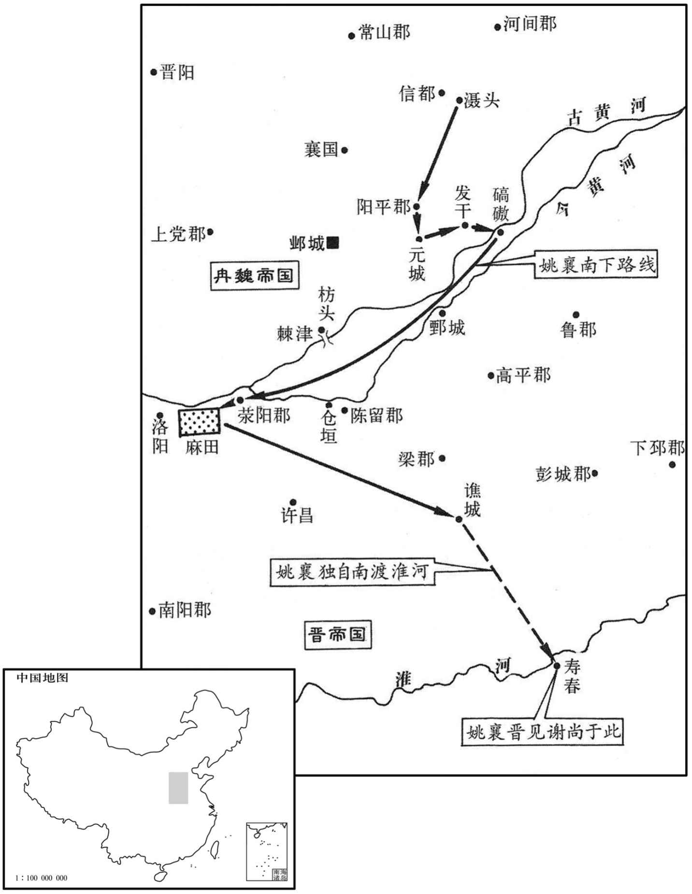
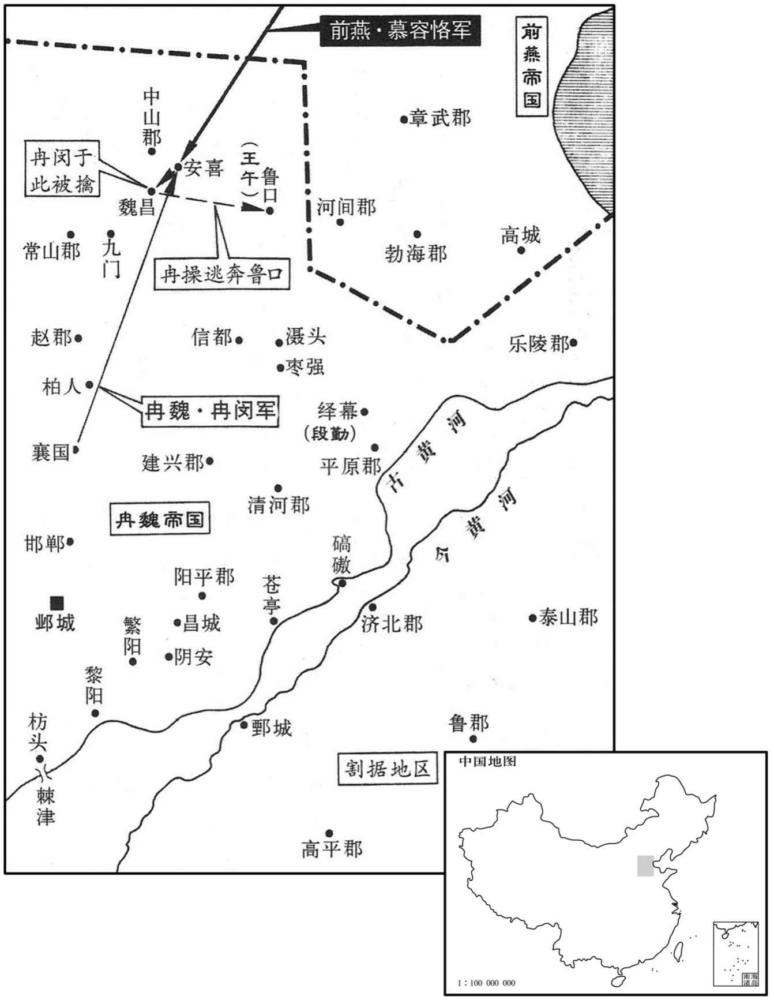
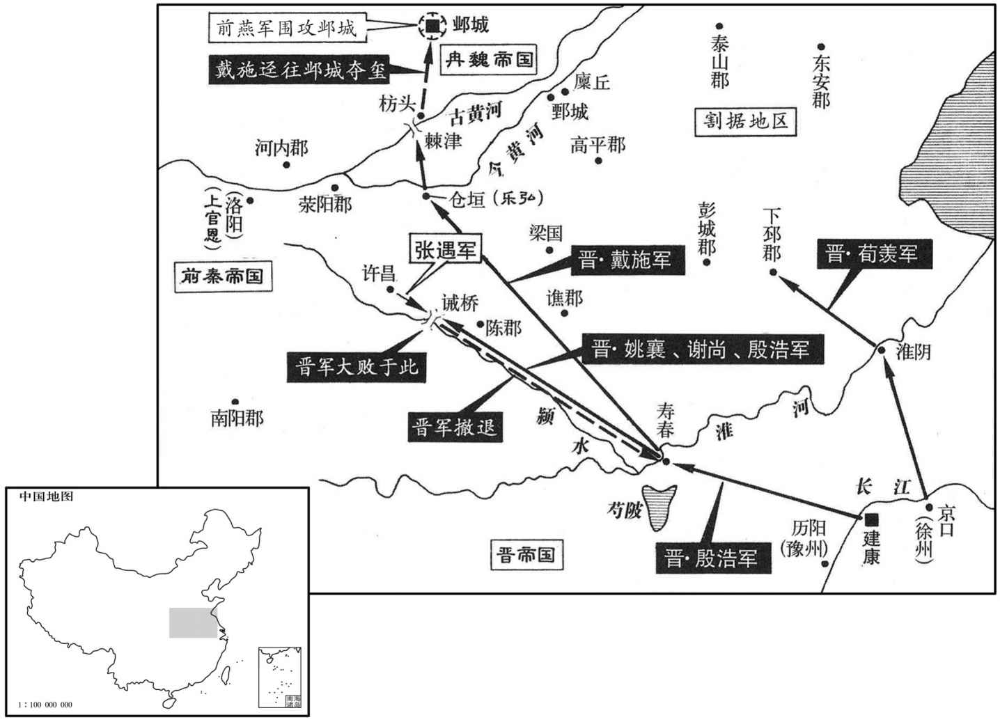
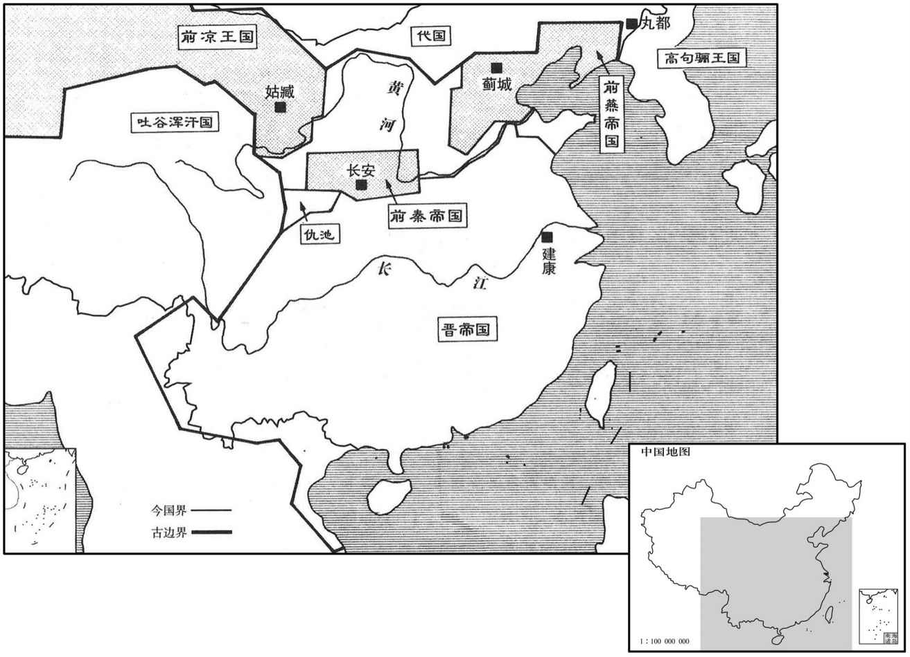
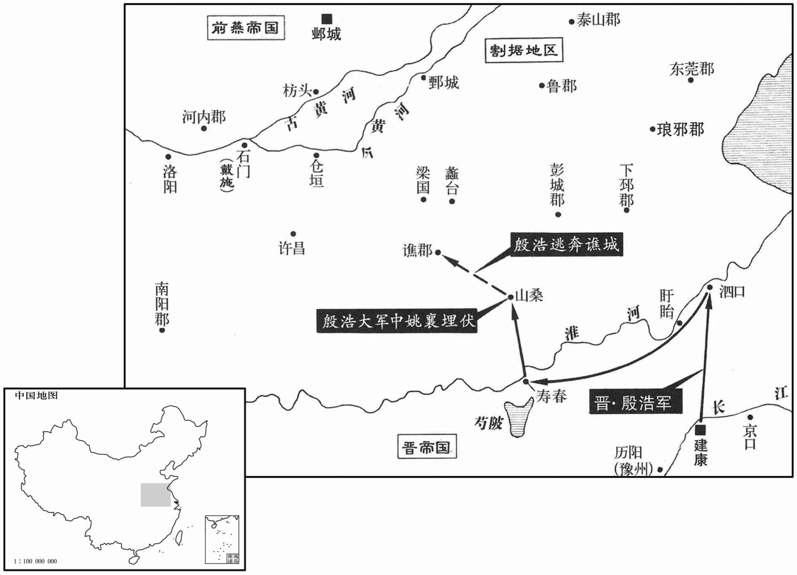

公元352年资治通鉴：本年记事、原文与白话对照
按原书编年位置阅读；追叙和史论不等于本年发生的事件。白话采用所据译本，缺译不以生成译文补齐。
卷99 · 本年记事
公元352年 · 晋孝宗穆皇帝永和八年
八年〔（壬子、三五二）〕
上传原文的注释括号有异常，字符原样保留；无法可靠划分的段落默认全文显示。
本年事件索引（现代整理）
- 出现日食
- 苻健即皇帝位，正式建立前秦
- 张琚杀杜洪，自立秦王
- 冉闵攻陷襄国，石氏灭亡
- 尚书左丞孔严向殷浩进言对话
- 殷浩北伐许洛受挫
- 前燕王慕容俊回到蓟城
- 姚弋仲临终劝子归晋，姚襄起兵南下
- 姚襄败于前秦，损失三万户
- 姚襄归附东晋并屯驻谯城
- 魏主冉闵既已克襄国
- 魏主冉闵准备与前燕交战议事
- 慕容恪击败冉闵，擒获冉闵
- 慕容儁押冉闵至蓟城并鞭打
- 慕容霸的军队抵达绎幕，段勤和他的弟弟段思聪投降
- 慕容评攻邺城，魏军闭城拒守
- 前秦任张遇为征东大将军、豫州牧
- 前秦主苻健在宜秋攻张琚
- 邺城饥荒，燕军围攻
- 前燕处斩冉闵
- 戴施骗取传国玺，晋军救援邺城
- 前秦主苻健返回长安
- 谢尚姚襄攻许昌败退
- 后赵过去的西中郎将王擢遣使者向东晋请求投降
- 东晋朝廷任武陵王司马为太宰
- 前燕王慕容俊到中山
- 王午听说了魏失败的消息，邓恒已经死去
- 魏将开邺城迎燕，冉魏灭亡
- 桓温派司马勋帮助周抚在涪城讨伐萧敬文，杀掉了他
- 谢尚从枋头迎接传国印玺抵达建康，朝廷百官
- 前秦任雷弱儿为大司马，毛贵为太尉
- 王羲之劝殷浩停止北伐
- 王羲之劝会稽王量力保江南
- 殷浩驻扎在泗口，派河南太守戴施占据石门
- 谢尚派冠军将军王侠克了许昌
- 前燕王慕容俊回到蓟城
- 过去后赵的将领中带领士兵占据州郡的人
- 慕容恪击杀苏林，王午被杀
- 慕容儁称帝建燕
- 苻雄击败王擢，王擢逃凉州

本年形势与背景参考图

本年形势与背景参考图

本年形势与背景参考图

本年形势与背景参考图

本年形势与背景参考图
春，正月，辛卯，日有食之。
春季，正月，辛卯（初一），出现日食。
秦丞相雄等请秦王健正尊号，依汉、晋之旧，不必效石氏之初。〔谓不虎兄弟皆先称天王，后即皇帝位。〕健从之，即皇帝位，大赦。诸公皆进爵为王。且言单于所以统壹百蛮，非天子所宜领，〔此亦雄等之言也。单，音蝉。〕以授太子苌。
前秦丞相苻雄等人请求秦王苻健正式称皇帝的尊号，依从汉朝、晋朝的旧制，而不必效法石氏最初先称天王的做法。苻健听从了这一请求，即皇帝位，实行大赦。诸公全都晋升爵位为王。苻雄等人还说，单于用来统治百蛮的种种措施、办法，不宜由天子亲自掌管。所以苻健把这方面的权力授予太子苻苌。
司马勋既还汉中，杜洪、张琚屯宜秋。〔水经注：郑渠自中山西瓠口东流，径宜秋城北，又东径中山南，又东径池阳县故城北。〕洪自以右族轻琚，琚遂杀洪，自立为秦王，改元建昌。
司马勋已经回到汉中，杜洪、张琚驻扎在宜秋。杜洪自以为出身名门望族而轻视张琚，张琚于是就杀掉了杜洪，自立为秦王，改年号为建昌。
刘显攻常山，魏主闵留大将军蒋干使辅太子智守邺，自将八千骑救之。显大司马清河王宁以枣强降魏。〔枣强县，前汉属清河郡，后汉、晋省，寻复置，属信都郡。〕闵击显，败之，〔败，补迈翻。〕追奔至襄国。显大将军曹伏驹开门纳闵，闵杀显及其公卿已下百余人，〔考异曰：闵杀显，晋帝纪在正月，十六国春秋钞在二月，燕书在三月己酉，未知敦是。今从帝纪。〕焚襄国宫室，迁其民于邺。赵汝阴王琨以其妻妾来奔，斩于建康市，石氏遂绝。〔自古无不亡之国，宗族诛夷，固亦有之，未有至于绝姓者。石氏穷凶极暴，而子孙无遗种，足以见天道之不爽矣。〕
刘显进攻常山，魏国主冉闵留下大将军蒋辅佐太子冉智守卫邺城，自己统率八千骑兵前去救援。刘显的大司马清河人王宁投降了魏国，将枣强县拱手交出。冉闵攻击刘显，打败了他，追击到襄国。刘显的大将军曹伏驹打开城门让石闵进入，石闵杀掉了刘显及其公卿以下的官吏一百多人，焚烧了襄国的宫室，将襄国的百姓迁徙到邺城。后赵汝阴王石琨带着他的妻妾前来东晋投降，被斩杀在建康街头，于是石氏被彻底根绝了。
尚书左丞孔严言于殷浩曰：「比来众情，良可寒心，〔比，毗至翻。〕不知使君当何以镇之。愚谓宜明受任之方，韩、彭专征伐，萧、昔守管钥，〔事见汉高帝纪。曹参当高帝时，从韩信用兵，其后相齐，未尝守管钥。严以萧、曹相继为相而言之。〕内外之任，各有攸司；深思廉、蔺屈身之义，〔事见四卷周赧王三十六年。〕平、勃交欢之谋，〔事见十三卷汉高后七年。〕令穆然无间，〔穆然，和而静之貌。间，古苋翻。〕然后可以保大定功也。〔严欲浩与桓温两释猜嫌，降心相从，以图国事也。「保大定功」，左传楚庄王所谓武有七德，此其二也。〕观近日降附之徒，皆人面兽心，贪而无亲，恐难以义感也。」〔段龛、张遇、姚襄之徒，孔严固见其肺肝矣。降，户江翻。〕浩不从。严，愉之从子也。〔从，才用翻。〕
尚书左丞孔严向殷浩进言说：“近来人们的情绪，真令人心寒，不知您将用什么办法使其安定。我认为应该明确官吏的职责，韩信、彭越专事征伐，萧何、曹参留守理财，对内对外的职责，各有所司；还应该深思廉颇、蔺相如为国家利益而捐弃前嫌的道理，陈平、周勃为制止吕氏专权而结为至交的谋略，让人们和睦无间，然后就可以保有天下，成就功业了。看看近来投降归附的那些人，全都是人面兽心，贪婪之极而且六亲不认，恐怕难以用道义感化他们。”殷浩没有听从孔严的意见。孔严是孔愉的侄子。
浩上疏请北出许、洛，诏许之，以安西将军谢尚、北中郎将荀羡为督统，〔晋志曰：四中郎将并后汉置，历魏及晋并有其职，江左弥重。时谢尚镇寿春，荀羡镇京口，浩欲两道俱进，故使二人并为督统，各统其方之兵。〕进屯寿春。谢尚不能抚尉张遇，〔尉，与慰同。〕遇怒，据许昌叛，使其将上官恩据洛阳，乐弘攻督护戴施于仓垣，浩军不能进。三月，命荀羡镇淮阴，寻加监青州诸军事，〔监，工衔翻。〕又领兖州刺史，镇下邳。
殷浩上疏请求北上许昌、洛阳，穆帝复诏同意，于是任命安西将军谢尚、北中郎将荀羡为督统，进军驻扎于寿春。谢尚没能抚慰张遇，张遇非常愤怒，便占据许昌反叛，并派他的将领上官恩占据洛阳，乐弘在仓垣攻打督护戴施，殷浩的军队无法前进。三月，命令荀羡镇守淮阴，不久加任监青州诸军事，又兼任兖州刺史，镇守下邳。
乙巳，燕王儁还蓟，稍徙军中文武兵民家属于蓟。〔自北徙其家属而南，又恐其怀居而无乐迁之心，故稍徙之。〕
乙巳（十六日），前燕王慕容俊回到蓟城，并将少量的军队文武官员、士兵的家属迁徙到蓟城。
姚弋仲有子四十二人，及病，谓诸子曰：「石氏待吾厚，吾本欲为之尽力。〔为，于伪翻。〕今石氏已灭，中原无主；我死，汝亟自归于晋，当固执臣节，无为不义也！」弋仲卒，子襄秘不发丧，帅户六万南攻阳平、元城、发干，破之，屯于碻磝津；〔帅，读曰率；下同。襄自滠头而南也。元城县，汉属魏郡，晋属阳平郡。发干县，汉属东郡，晋属阳平郡。刘昫曰：唐魏州莘县，汉阳平县地。碻磝城，即汉东郡茌平县故城，其西南即河津，谓之碻磝津。后魏置济州于碻磝城。杜佑曰：碻磝，即今济阳郡城。碻，口交翻；磝，音敖。杨正衡曰：碻，五劳翻；磝，口劳翻。毛晃曰：碻，丘交翻；磝，牛交翻。或曰：碻，音确；磝，音爻。〕以太原王亮为长史，天水尹赤为司马，太原薛瓒、略阳权翼为参军。〔姓谱：权本颛顼之后。楚武王使鬬缗尹权，因以为氏。韩愈权德舆墓碑曰：殷武丁之子降封于权；权，江、汉间国也，周衰，入楚，为权氏。瓒，藏旱翻。〕
姚弋仲有儿子四十二人，等到他病重时，对儿子们说：“石氏对待我很优厚，我本想为他们尽力。如今石氏已被消灭，中原混战无主，我死了以后，你们赶快自己归附晋朝，应当固守作为臣下的气节，不要干不义的事情！”姚弋仲去世，其子姚襄隐瞒消息，不告诉别人，率领六万家的兵众南进，攻打阳平、元城、发干，全部攻克，兵众驻扎在津。任命太原人王亮为长史，天水人尹赤为司马，太原人薛瓒、略阳人权翼为参军。
襄与秦兵战，败，亡三万余户，南至荥阳，始发丧。又与秦将高昌、李历战于麻田，〔高昌、李历，本赵将也，时附于秦，故称秦将。荥、洛之间，地名有豆田、麻田，各因人所种艺而名之。〕马中流矢而毙。〔中，竹仲翻。〕弟苌以马授襄，〔苌，仲良翻。〕襄曰：「汝何以自免﹖」苌曰：「但令兄济，竖子必不敢害苌！」会救至，俱免。尹赤奔秦，秦以赤为并州刺史，镇蒲阪。
姚襄与前秦的军队交战，被打败，死亡、溃散了三万多家的兵众。南进抵达荥阳，才公开了父亲死亡的消息。又与前秦将领高昌、李历在麻田交战，他的战马因中了流箭而死。姚襄的弟弟姚苌给了他一匹马，姚襄说：“你自己如何脱身？”姚苌说：“只要哥哥平安，那帮小子就不敢伤害我！”恰好这时援兵到达，他们全都幸免于难。尹赤投奔前秦，前秦任命尹赤为并州刺史，镇守蒲阪。
襄遂帅众归晋，送其五弟为质。〔质，音致。〕诏襄屯谯城。襄单骑渡淮，见谢尚于寿春。尚闻其名，命去仗卫，幅巾待之，〔骑，奇寄翻。去，丘吕翻。〕欢若平生。襄博学，善谈论，江东人士皆重之。
姚襄于是率领兵众归附东晋，并把他的五个弟弟送去作为人质。东晋朝廷诏令姚襄屯戍谯城。姚襄单人匹马渡过淮河，在寿春见到了谢尚。谢尚久闻其名，命令撤掉仪仗侍卫，自己摘掉帽子，只以绢丝束发，热情地招待他，就像见故友一样。姚襄很博学，善于言谈，江东的人士都很推重他。
魏主闵既克襄国，因游食常山、中山诸郡。赵立义将军段勤聚胡、羯万余人保据绎幕，〔绎幕县，自汉以来属清河郡。〕自称赵帝。夏，四月，甲子，燕王儁遗慕容恪等击魏，慕容霸等击勤。
魏国主冉闵既已攻克襄国，因此就在常山、中山等地周游吃喝。后赵国立义将军段勤聚集了胡族、羯族一万多人保卫据守绎幕，自称为赵帝。夏季，四月，甲子（初五），前燕王慕容俊派慕容恪等人率兵攻击魏国，派慕容霸等人率兵攻击段勤。
魏主闵将与燕战，大将军董闰、车骑将军张温谏曰：〔骑，奇寄翻；下同。〕「鲜卑乘胜锋锐，且彼众我寡，宜且避之；俟其骄惰，然后益兵以击之。」闵怒曰：「吾欲以此众平幽州，斩慕容儁；今遇恪而避之，人谓我何！」司徒刘茂、特进郎闿相谓曰：「吾君此行，必不还矣，吾等何为坐待戮辱！」皆自杀。〔闿，苦亥翻，又音开。〕
魏国主冉闵准备与前燕交战，大将军董闰、车骑将军张温劝谏他说：“鲜卑人乘胜利之势，锋芒锐利，而且敌众我寡，应该暂且躲避。等他们骄傲懈怠以后，再增加兵力，加以攻击。”冉闵愤怒地说：“我要用这些兵众平定幽州，斩杀慕容俊。如今遇上了慕容恪而躲避他，人们该说我什么呢！”司徒刘茂、特进郎互相说：“我们的国君此次出征，一定是有去无回，我们为什么要坐等被杀戮的耻辱！”于是他们俩都自杀了。
闵军于安喜，〔安喜县，前县曰安险，属中山郡，后汉章帝更名；唐复为安险县，属安州。而定州所治之安喜县，汉卢奴县也。〕慕容恪引兵从之。闵趣常山，〔趣，七喻翻；下同。〕恪追之，及〔【章：十二行本「及」上有「丙子」二字；乙十一行本同；孔本同；张校同。】〕于魏昌之廉台。〔魏昌县，属中山郡，本苦陉，汉章帝改为汉昌，魏文帝改为魏昌，唐为定州唐昌县。魏收地形志：中山毋极县有廉台。盖晋省无极县，廉台遂在魏昌界。〕闵与燕兵十战，燕兵皆不胜。闵素有勇名，所将兵精锐，〔将，即亮翻。〕燕人惮之。慕容恪巡陈，〔陈，读曰阵。〕谓将士曰：「冉闵勇而无谋，一夫敌耳！其士卒饥疲，甲兵虽精，其实难用，不足破也！」闵以所将多步卒，〔将，即亮翻。〕而燕皆骑兵，引兵将趣林中。恪参军高开曰：「吾骑兵利平地，若闵得入林，不可复制。〔复，扶又翻。〕宜亟遣轻骑邀之，既合而阳走，诱致平地，然后可击也。」〔诱，音酉。〕恪从之。魏兵还就平地，恪分军为三部，谓诸将曰：「闵性轻锐，又自以众少，必致死于我。我厚集中军之陈以待之，〔少，诗沼翻。陈，读曰阵；下同。〕俟其合战，卿等从旁击之，无不克矣。」乃择鲜卑善射者五千人，以铁锁连其马，为方陈而前。闵所乘骏马曰朱龙，日行千里。闵左操两刀矛，右执钩戟，以击燕兵，斩首三百余级。望见大幢，知其为中军，直冲之；燕两军从旁夹击，大破之。〔恪以铁锁连马，则闵兵虽致死而陈不可破，两军从旁夹击，则闵兵三面受敌，不败何待！操，千刀翻。幢，直江翻。〕围闵数重，〔重，直龙翻。〕闵溃围东走二十余里，朱龙忽毙，为燕兵所执。燕人杀魏仆射刘群，执董闵、张温及闵，皆送于蓟。〔「董闵」当作「董闰」。〔【章：孔本正作「闰」。冉闵自立事始上卷六年，至是而灭。〕闵子操奔鲁口。高开被创而卒。〔创，初良翻。〕慕容恪进屯常山，儁命恪镇中山。
冉闵驻军于安喜，慕容恪率兵跟随。冉闵向常山开进，慕容恪紧追不舍，一直追到魏昌县的廉台。冉闵与前燕兵交战十次，前燕兵全都没有获胜。冉闵历来有勇猛的名声，所统领的士兵精良，前燕人很惧怕他。慕容恪巡视兵阵，对他的将士们说：“冉闵有勇无谋，只能以一当一而已！他的士兵饥饿疲惫，武器装备虽然精良，但实际上难以为用，不难打败他们！”冉闵认为自己所统领的多是步兵，而前燕全是骑兵，于是就率领兵众向丛林开进。慕容恪的参军高开说：“我们骑兵在平坦地域作战有利，如果冉闵得以进入丛森，就无法再控制他了。应该火速派轻装的骑兵去拦截他，等到交战以后再假装逃跑，诱使他来到平坦地域，然后便能进行攻击了。”慕容恪听从了这一意见。魏兵回师追到平坦的地域，慕容恪把军队分为三部分，对将领们说：“冉闵生性轻敌，锐气十足，又自认为兵众较少，一定会拼死与我们作战。我要在中军的阵地上集中优势兵力等着他，等到交战以后，你们从两翼发起攻击，攻无不克。”于是他就选择五千名善于射箭的鲜卑人，用铁链把他们的马匹联结起来，形成方阵，布置在前面。冉闵所骑的骏马名叫朱龙，日行千里。只见他左手持有两刃矛，右手拿着钩戟，用来攻击前燕兵，杀掉了三百多人。当他望见宽大的仪仗旗帜后，知道这便是中军，就径直发起冲击。这时，前燕军的其他两部分从两翼夹击，彻底攻破了冉闵的部队。他们把冉闵团团围住，冉闵突破重围向东逃窜了二十多里，不巧骏马朱龙突然死亡，冉闵被前燕兵俘获。前燕兵杀掉了魏国仆射刘群，抓到了董闵、张温及冉闵，把他们全都送往蓟城。冉闵的儿子冉操逃到鲁口。高开负伤而死。慕容恪进军驻扎于常山，慕容俊命令他镇守中山。
己卯，冉闵至蓟。儁大赦。立闵而责之曰：「汝奴仆下才，何得妄称帝﹖」闵曰：「天下大乱，尔曹夷狄禽兽之类犹称帝，况我中土英雄，何得不〔【章：十二行本「何得不」作「何为不得」四字；乙十二行本同；孔本同；张校同。】〕称帝邪！」儁怒，鞭之三百，送于龙城。
己卯（二十日），冉闵被押送到蓟城。慕容俊实行大赦。慕容俊让冉闵站在那里斥责他说：“你不过是才能低下的奴仆，怎么能妄自称帝？”冉闵说：“天下大乱，你们夷狄禽兽之类尚可称帝，何况我中原英雄，为什么不能称帝呢！”慕容俊大怒，打了他三百鞭，把他送到龙城。
慕容霸军至绎幕，段勤与弟思聪举城降。〔降，户江翻；下同。〕
慕容霸的军队抵达绎幕，段勤和他的弟弟段思聪投降，举城投降。
甲申，儁遗慕容评及中尉侯龛帅精骑万人攻邺。〔龛，苦含翻。〕癸巳，至邺，魏蒋干及太子智闭城拒守，城外皆降于燕，刘宁及弟崇帅胡骑三千奔晋阳。〔刘宁，刘显将也，以枣强降闵。帅，读曰率。〕
甲申（二十五日），慕容俊派慕容评及中尉侯龛率领精锐骑兵一万人进攻邺城。癸已（疑误），抵达邺城，魏国的蒋及太子冉智紧闭城门抵抗固守，城外的兵众全都投降了前燕军。刘宁及他的弟弟刘崇率领三千胡人骑兵逃奔晋阳。
秦以张遇为征东大将军、豫州牧。
前秦任命张遇为征东大将军、豫州牧。
五月，秦主健攻张琚于宜秋，斩之。
五月，前秦国主苻健在宜秋攻打张琚，将其斩杀。
邺中大饥，人相食，故赵时宫人被食略尽。〔被，皮义翻。〕蒋干使侍中缪嵩、詹事刘猗奉表请降，且求救于谢尚。〔缪，靡幼翻。〕庚寅，王儁遣广威将军慕容军、殿中将军慕舆根、右司马皇甫真等帅步骑二万助慕容评攻邺。
邺中地区发生严重饥荒，人们互相残食，过去后赵的宫人被残食殆尽。蒋派侍中缪嵩、詹事刘猗向东晋朝廷进奉降表，请求投降，并且向谢尚求救。庚寅（初二），前燕王慕容俊派广威将军慕容军、殿中将军慕舆根、右司马皇甫真等人率领步、骑兵二万人协助慕容评攻打邺城。
辛卯，燕人斩冉闵于龙城。会大旱、蝗，燕王儁谓闵为祟，〔祟，虽遂翻。神祸曰祟。〕遣使祀之，谥曰悼武天王。
辛卯（初三），前燕人在龙城斩杀了冉闵。恰好这时发生了严重的旱灾、蝗灾，前燕王慕容俊说这是冉闵在作祟，便派使臣去祭祀他，给他追封谥号为悼武天王。
初，谢尚使戴施据枋头，〔遣施之时，指令据枋头。〕施闻蒋干求救，乃自仓垣徙屯棘津，〔棘津，即石济南津，有棘津亭。〕止干使者求传国玺。〔玺，斯氏翻。〕刘猗使缪嵩还邺白干，干疑尚不能救，沈吟未决。〔沈，持林翻。〕六月，施帅壮士百余人入邺，助守三台，绐之曰：「今燕寇在外，道路不通，玺未敢送也。卿且出以付我，我当驰白天子。天子闻玺在吾所，信卿至诚，必多发兵粮以相救饷。」干以为然，出玺付之。施宣言使督护何融迎粮，阴令怀玺送于枋头。〔江南之未得玺也，中原谓之「白版天子」。传国玺至此归晋。蔺相如全璧归赵，赵王擢之，自缪贤舍人为上大夫。戴施能复致累代传国之宝，未闻晋朝以显赏甄之也，何居！〕甲子，蒋干帅锐卒五千及晋兵出战，慕容评大破之，斩首四千级，干脱走入城。
当初，谢尚派戴施据守枋头，戴施听说蒋派人前来求救，就从仓垣移师到棘津驻扎，阻拦了蒋派出的使者，索要传国印玺。刘猗让缪嵩返回邺城禀报蒋。蒋怀疑谢尚不能前来援救。犹豫不决。六月，戴施率领一百多名勇士进入邺城，帮助守卫三台，并哄骗蒋说：“如今燕寇陈兵城外，道路不通，传国印玺还不敢送走。你姑且把它拿出来交给我，我将策马迅速禀报天子。天子听到传国印玺在我们这里，会真诚地相信你，一定会多多地下发兵粮以救助你的困难。”蒋认为他说得有道理，就拿出传国印玺交给了他。戴施公开宣称派督护何融去迎接兵粮，暗地里却怀揣传国印玺送到了枋头。甲子（初六），蒋率领精锐部卒五千人及东晋的士兵出城战斗，被慕容评彻底打败，四千多人被斩首，蒋逃回邺城。
甲申，秦主健还长安。〔自宜秋还长安也。〕
甲申（二十六日），前秦国主苻健返回长安。
谢尚、姚襄共攻张遇于许昌。秦主健遣丞相东海王雄、卫大将军平昌王菁略地关东，帅步骑二万救之。丁亥，战于颍水之诫桥，〔据晋纪，诫桥，在许昌。〕尚等大败，死者万五千人。尚奔还淮南，襄弃辎重，送尚于芍陂；〔重，直用翻。〕尚悉以后事付襄。〔谢尚既败，姚襄知晋之不足恃，固有去晋之心，矧殷浩又从而速之乎！〕殷浩闻尚败，退屯寿春。秋，七月，秦丞相雄徙张遇及陈、颍、许、洛之民五万余户于关中，〔张遇据有许、颍，岂肯敛手受羁制于人乎！苻雄乘胜以兵威徙之，自此遇之死命制于苻氏矣！〕以右卫将军杨群为豫州刺史，镇许昌。谢尚降号建威将军。
谢尚、姚襄一起在许昌攻打张遇。前秦国主苻健派丞相东海王苻雄、卫大将军平昌王苻菁攻占关东地区，率领二万步、骑兵去援救张遇。丁亥（二十九日），双方在颍水的诫桥交战，谢尚等大败，死亡一万五千人。谢尚逃回淮南，姚襄扔掉了军用物资，护送谢尚到了芍陂。谢尚 把自己的后事全托付给了姚襄。殷浩听到谢尚失败的消息，退到寿春驻扎。秋季，七月，前秦丞相苻雄把张遇及陈郡、颍川、许昌、洛阳的百姓五万多户迁徙到关中，任命右卫将军杨群为豫州刺史，镇守许昌。谢尚贬降名号为建威将军。
赵故西中郎将王擢遣使请降，拜擢秦州刺史。〔王擢自石虎时当秦、陇之任。降，户江翻；下同。〕
后赵国过去的西中郎将王擢派遣使者向东晋请求投降，朝廷授予王擢秦州刺史职务。
丁酉，以武陵王晞为太宰。
丁酉（初十），东晋朝廷任命武陵王司马为太宰。
丙辰，燕王儁如中山。
两版字句有差异，建议核对原文。
丙辰（二十九日），前燕王慕容俊到中山。
王午闻魏败，时邓恒已死，〔恒，户登翻。〕午自称安国王。八月，戊辰，燕王儁遣慕容恪、封奕、阳骛攻之，午闭城自守，送冉操诣燕军，燕人掠其禾稼而还。〔慕容恪善用兵，知鲁口之未可取，徒久攻以毙士卒，故掠其禾稼，全师而退。金城汤池，非粟不守，孤城之外，春取其麦而秋取其禾，彼将焉仰哉！还，方宣翻，又如字。〕
王午听说了魏国失败的消息，当时邓恒已经死去，王午自称安国王。八月，戊辰（十一日），前燕王慕容俊派慕容恪、封奕、阳鹜攻打他，王午紧闭城门自守，把冉操送给燕军，燕人把他们的庄稼砍掠一空后返回去了。
庚午，魏长水校尉马愿等开邺城纳燕兵，戴施、蒋干悬缒而下，〔缒，直伪翻。〕奔于仓垣。慕容评送魏后董氏、太子智、太尉申锺、司空条枚严：「枚」改「攸」。】〕等〔条，姓也。周亚夫封条侯，其后以为氏。〕及乘舆服御于蓟。〔乘，绳证翻。〕尚书令王简、左仆射张干、右仆射郎肃皆自杀。燕王儁诈云董氏得传国玺献之，赐号奉玺君，赐冉智爵海宾侯。以车锺为大将军右长史；命慕容评镇邺。
本段缺少可靠对应白话，原文完整保留；未使用生成译文。
桓温使司马勋助周抚讨萧敬文于涪城，斩之。〔萧敬文据涪城，始九十七卷永和三年。涪，音浮。〕
桓温派司马勋帮助周抚在涪城讨伐萧敬文，杀掉了他。
谢尚自枋头迎传国玺至建康，百僚毕贺。
谢尚从枋头迎接传国印玺抵达建康，朝廷百官，一同庆贺。
秦以雷弱儿为大司马，毛贵为太尉，张遇为司空。
前秦任命雷弱儿为大司马，毛贵为太尉，张遇为司空。
殷浩之北伐也，中军将军王羲之以书止之，不听。既而无功，复谋再举。〔复，扶又翻；下所复、故复同。〕羲之遗浩书曰：「今以区区江左，天下寒心，固已久矣，〔寒心者，恐不能自保。遗，于季翻。〕力争武功，非所当作。〔作，为也。〕自顷处内外之任者，〔处，昌吕翻；下而处同。〕未有深谋远虑，而疲竭根本，各从所志，竟无一功可论，遂令天下将有土崩之势；任其事者，岂得辞四海之责哉！〔言殷浩不得辞其责也。〕今军破于外，资竭于内，保淮之志，非所复及，莫若还保长江，督将各复旧镇；〔将，即亮翻。〕自长江以外，羁縻而已。引咎责躬，更为善治，〔治，直吏翻。〕省其赋役，与民更始，庶可以救倒悬之急也！〔保江之说，此王导佐元帝之规摹。世之议者，讥其忘雠忍耻，置中原于度外。若以量时度力、保固本根言之，此策未为非也。至于引咎责躬，省民赋役，所谓善败不亡；诸葛孔明街亭丧师之后，正亦如是而已。〕使君起于布衣，任天下之重，当董统之任，而败丧至此，〔丧，息浪翻。〕恐阖朝群贤未有与人分其谤者。〔朝，直遥翻。〕若犹以前事为未工，故复求之分外，〔分，扶问翻。〕宇宙虽广，自容何所！此愚智所不解也。」〔解，胡买翻，晓也。其后殷浩废黜，卒如羲之之言。〕
殷浩北伐的时候，中军将军王羲之写信劝他不要去，他没有听从。此后无功而返，他便图谋再一次出征。王羲之给殷浩写信说：“如今我们占据着区区江左之地，天下人为之心寒，本来已经很久了。力争战功，不是现在该干的事情。近来在朝廷内外任职的官员们，没有深谋远虑，却任意挥霍摧残国家的根基，每个人都追求实现自己的志向，最终却没有一桩战功可言，于是使天下大有土崩瓦解的趋势。干这种事情的人，岂能让他推卸掉天下人的责怪！如今在外边军队被攻破，在国内资财被耗尽，保全淮南的志向，已经不再是力所能及的了，不如回来确保长江，督将们再各自镇守旧地，长江以远的地区，保持着联系就可以了。官员们引咎自责，重新实施良好的治理方法，减免赋税徭役，与百姓一起从头奋斗，或许还可以解救千钧一发的危急局势。您出身于布衣百姓，承担着天下的重任，掌管着督察统管之责，然而却失败落魄到如此地步，恐怕满朝廷的那些贤士没有一个会愿意为别人分担责任。如果您还觉得以前的事情考虑得不周到、细致，所以应该再去追求分外之功，那么虽说宇宙广大，恐怕也容不下您！这就是我愚钝的头脑所不能理解的。”
又与会稽王昱笺曰：「为人臣谁不愿尊其主，比隆前世；况遇难得之运哉！顾力有所不及，岂可不权轻重而处之也！〔处，昌吕翻。〕今虽有可喜之会，内求诸己，而所忧乃重于所喜。功未可期，遗黎歼尽，劳役无时，征求日重，以区区吴、越经纬天下十分之九，不亡何待！而不度德量力，〔度，徒洛翻。量，音良。〕不弊不已，此封内所痛心叹悼而莫敢吐诚者也。『往者不可谏，来者犹可追。』〔论语载楚狂接舆之言。〕愿殿下更垂三思，先为不可胜之基，须根立势举，谋之未晚。〔兵法曰：先为不可胜以待敌之可胜。〕若不行，〔此处文意短蹙，恐有脱文。〕恐麋鹿之游，将不止林薮而已！〔吴伍子胥曰：「臣恐麋鹿游于姑苏。」此祖其意而微其言。泽无水曰薮。〕愿殿下蹔废虚远之怀，〔羲之此言，盖讥昱好谈清虚玄远也。蹔，与暂同。〕以救倒悬之急，可谓以亡为存，转祸为福也。」不从。
王羲之又给会稽王司马昱去信说：“作为臣下，谁不愿意尊奉自己的君主，希望他的事业和前代一样兴隆昌盛呢？况且是在遇到了难得的时运的时候。只不过在力量有所不及的情况下，难道能不权衡轻重而随意行事吗！如今虽然有令人可喜的机会，但看看自身的情况，令人担忧的事情仍然多于令人可喜的事情。成功未可预期，遗民损失殆尽，劳役毫无时限，征敛日益繁重，以区区吴、越之地去征服统治天下十分之九的广阔地区，不灭亡又会怎样呢！不权衡自己的德行与力量，不彻底失败就不善罢某休，这就是国内人士所痛心疾首而又不敢直说的话。‘过去的已经无法挽回，但未来的还可以补救。’希望殿下再度三思，先奠定不可战胜的根基，等到根基牢固、势力强大时再作图谋，那也为时不晚。如果不这样做，恐怕危险就会降临到我们江南！希望殿下能暂时放弃虚华高远的想法，以挽救眼前千钧一发的危急局势，这才可以说是以亡图存，转祸为福。”司马昱没有听从王羲之的劝告。
九月，浩屯泗口，遣河南太守戴施据石门，荥阳太守刘遯据仓垣。浩以军兴，罢遣太学生徒，学校由此遂废。〔元帝建武元年，始立太学，今复以军兴废。校，户教翻。〕
九月，殷浩驻扎在泗口，派河南太守戴施占据石门，荥阳太守刘遁占据仓垣。殷浩以征集财物供军用为由，停止了太学学生的学习，并将他们遣散回去，学校从此也就关闭了。
冬，十月，谢尚遣冠军将军王侠攻许昌，克之。〔冠，古玩翻。侠，户颊翻。〕秦豫州刺史杨群退屯弘农。征尚为给事中，戍石头。
冬季，十月，谢尚派冠军将军王侠攻克了许昌。前秦的豫州刺史杨群撤退驻扎在弘农。东晋朝廷征召谢尚为给事中，戍卫石头。
丁卯，燕王儁还蓟。
两版字句有差异，建议核对原文。
丁卯（十一日），前燕王慕容俊回到蓟城。
故赵将拥兵据州郡者，各遣使降燕；〔将，即亮翻。使，疏吏翻。降，户江翻。〕燕王儁以王擢为益州刺史，夔逸为秦州刺史，张平为并州刺史，李历为兖州刺史，高昌为安西将军，刘宁为车骑将军。
过去后赵国的将领中带领士兵占据州郡的人，各自都派使者向前燕投降，前燕王慕容俊任命王擢为益州刺史，夔逸为秦州刺史，张平为并州刺史，李历为兖州刺史，高昌为安西将军，刘宁为车骑将军。
慕容恪安平，〔安平县，前汉属涿郡，后汉安平国，晋属博陵郡，唐属深州。〕积粮，治攻具，将讨王午。〔治，直之翻。〕丙戌，中山苏林起兵于无极，〔无极县，汉属中山国，晋省。「无」，本作「毋」。唐武后万岁通天二年，始改「毋」字为「无」；此当作「毋」。〕自称天子；恪自鲁口还讨林。闰月，戊子，燕王儁遣广威将军慕舆根恪攻林，斩之。王午为其将秦兴所杀。吕护杀兴，复自称安国王。〔复，扶又翻。〕
慕容恪驻扎在安平，储备粮食，准备进攻的武器装备，将要讨伐王午。丙戌（疑误），中山人苏林在无极起兵，自称天子。慕容恪从鲁口返回讨伐苏林。闰十月，戊子（初三），前燕王慕容俊派广威将军慕舆根帮助慕容恪攻打苏林，把他杀掉了。王午被他的将领秦兴杀掉，吕护杀了秦兴，又自称安国王。
燕群僚共上尊号于燕王儁，儁许之。〔上，时掌翻。〕十一月，丁卯，始置百官，以国相封奕为太尉，左长史阳骛为尚书令，右司马皇甫真为尚书左仆射，典书令张悕为右仆射；〔悕，香衣翻。〕其余文武，拜授有差。戊辰，儁即皇帝位，大赦；自谓获传国玺，改元元玺。追尊武宣王为高祖武宣皇帝，文明王为太祖文明皇帝。〔廆谥武宣王，皝谥文明王。〕时晋使适至燕，〔使，疏吏翻。〕儁谓曰：「汝还白汝天子，我承人乏，为中国所推，已为帝矣！」〔谓中国无主，己为士民所推，遂承人乏而即尊位也。〕改司州为中州；建留台于龙都。〔赵置司州于邺。燕初都龙城，时迁于蓟，故建留台于龙城，谓之龙都。〕以玄菟太守乙逸为尚书，专委留务。〔菟，同都翻。〕
前燕国的官员们共同给前燕王慕容俊进上皇帝尊号，慕容俊同意了。十一月，丁卯（十二日），开始设置百官，任命国相封奕为太尉，左长史阳鹜为尚 书令，右司马皇甫真为尚书左仆射,典书令张为右仆射。其余的文武官员，授予的官职各有等差。戊辰（十三日），慕容俊即皇帝位，实行大赦。自称获 得了传国印玺，改年号为元玺。追尊武宣王慕容为高祖武宣皇帝，文明王慕容为太祖文明皇帝。这时东晋的使者恰好抵达前燕，慕容俊对他说：“你回去禀报你的天子，我趁着天下无人才的时机，被中原地区推举，已经成为皇帝了！”慕容俊将司州改为中州，在当初的国都龙城建立了留台。任命玄菟太守乙逸为尚书，专门委任他掌管留台事务。
秦丞相雄攻王擢于陇西，擢奔凉州，雄还屯陇东。〔陇东，汉汧县地。〕张重华以擢为征虏将军、秦州刺史，特宠待之。〔重华宠待王擢以图秦、陇，岂知擢非苻雄之敌也。〕
前秦丞相苻雄在陇西攻打王擢，王擢逃奔到凉州，苻雄返回，驻扎在陇东。张重华任命王擢为征虏将军、秦州刺史，特别宠待他。
译本所载内容待核对（不作白话）
[20]庚午，魏长水校尉马愿等开邺城纳燕兵，戴施、蒋悬缒而下，奔于仓垣。慕容评送魏后董氏、太子智、太尉申钟、司空条枚等及乘舆服御于蓟。尚书令王简、左仆射张乾、右仆射郎肃皆自杀。燕王俊诈云董氏得传国玺献之，赐号奉玺君，赐冉智爵海宾侯。以申钟为大将军右长史；命慕容评镇邺。[20]庚午（十三日），魏国长水校尉马愿等人打开邺城城门，让前燕军队进入，戴施、蒋系着绳子从城墙上滑下来，逃奔到仓垣。慕容评把魏后董氏、太子冉智、太尉申钟、司空条攸以及王宫车乘服饰送至蓟城。尚书令王简、左仆射张乾、右仆射郎萧全都自杀。前燕王慕容俊谎称董氏得到了传国印玺，并献给了他，因此赐董后号为奉玺君，赐封冉智以海宾侯爵位。任命申钟为大将军右长史。命令慕容评镇守邺城。